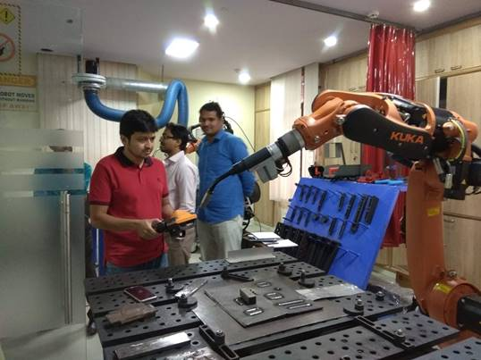
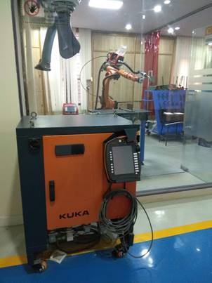

KUKA Industrial Robotics
KUKA is a German manufacturer of industrial
robots manufacturer make solutions for factory automation. This robots are mostly used in automobile industries. Typical applications of robots include welding, painting,
assembly, pick and place for printed circuit
boards, packaging and labeling, palletizing, product
inspection, and testing; all accomplished with high endurance, speed, and
precision. They can assist in material handling.

Programming
of KYKA robot can be performing in two ways. One is using machine named Online
programming. And another is using simulator called Offline programming. In online
programming the path have to define by using control interface and then
instruct to follow the path. And in
offline the path have to show in simulator and the robot follows the path
accordingly.